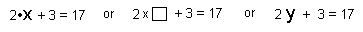
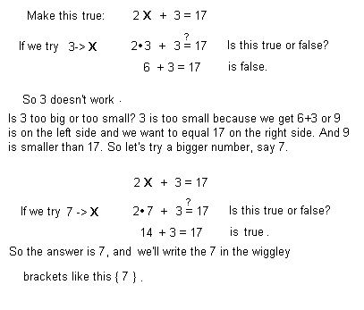
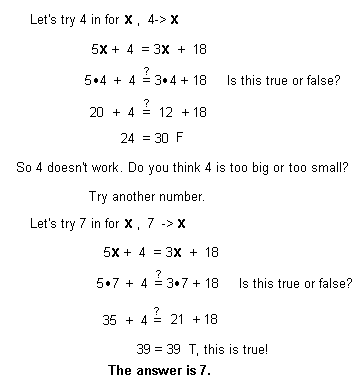
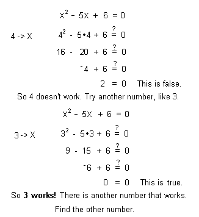
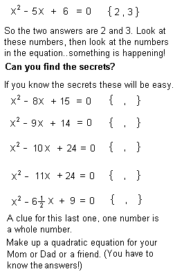
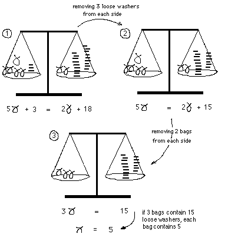

Sample Problems from Chapter 8
Part1- solving
equations
Chapter 8: Solving Equations
and Iteration
1. Make this equation or open sentence true, by
guessing:
This equation can be written different ways. The x or y or
box is a placeholder, or variable, it just holds the place for a
number.

We'll try a number for x and
see if it makes the sentence
true. Your job then, if you accept this mission, is to try to
find a number (x),
so that when you multiply it by 2, then add 3, you get
17.

Guessing is important, for at least 6 reasons:
1). It gets you started right away, even if your guess is wrong the first
try.
2). It gets you into the problem, you don't have to think "I haven't been
taught this yet, so I can't do it" attitude and then feel you have to
wait for someone to tell you how to solve it!
3). You can solve many equations this way, not a trivial few. Don't be
discouraged if you guess wrong the first few times; keep trying, you can
do it!
4). You'll also get better at guessing. and
5). You might even come up with different ways to solve the same problem,
which would be very good! Later we'll solve a quadratic equation about 10
ways!
6). Dr. Richard P. Feynman, Nobel prize-winning physicist in a
lecture to students said, if you
want to come up with a new law, you guess what it might be, then test out
the consequences.
Now solve these equations (make them true):
2x + 5 = 13
2x + 5 = 14
3x + 7 = 22
3x + 7 = 23
What could you change if you made up an equation.
Make up an equation for your Mom or Dad to figure out.
Make up some equations which have a pattern.
Make up an equation which has a negative number for an answer.
Make up some equations which have no answers!
Make up some equations so that every number will work!
2. Equations with x's on both sides..by guessing:
The rule for substitution says 'in any one open sentence with more
than one of the same variable (x), you have to put the same number in
for each'.
Put a number in for x and make this true: 5x + 4 =
3x + 18
Solve these equations (make them true)
6x + 2 = 3x + 20
8x + 3 = 4x + 23
5x + 4 = 3x + 19
3. Solving quadratic equations by guessing:
To do these, all you need to know is that 4 squared = 4^2 = 4x4= 16 and
3-5=-2.
The second number that works is 2.

4. Using balance pictures to
solve equations: A washer is what you put in a faucett to keep it
from leaking, a flat rubber, penny-shaped thing with a hole in it. In
the picture below, we solve 5x + 3 = 2x + 18. The x becomes a bag of
washers, and we are trying to figure out how many washers are in each
bag. We make a balance scale. On the left is 5 bags and 3 loose washers,
and on the right side is 2 bags and 18 loose washers. The scale is
balanced to begin with. The idea is to make the problem simpler by taking
off bags from both sides or loose ones from both sides, the same from
both sides, to keep the scale balanced: 
Make up some equations like the
one above, and solve them by making a balance picture for each.
To problems from Ch. 8 - 2nd part-
iteration
Ways
young people have solved these kinds of problems
To order Don's
materials
To choose sample problems from
other chapters
Mathman Home